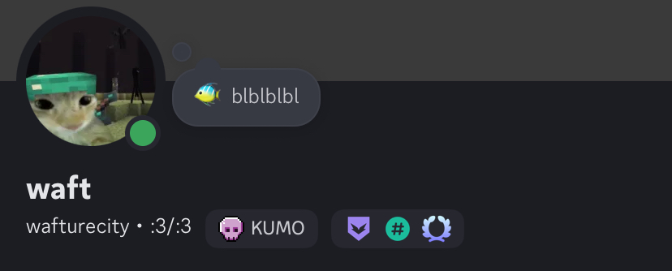

This is a very simple (maybe not anymore) website that I created for my internship, from July 21st 2026 to July 24th 2026, at Exoscale, and then was tasked with expanding it for my apprenticeship there.
So hopefully you understand what made me consider the other two jobs, and why I ended up with Informatics.
This site has hover pop ups! the small question mark (?) announces a hover pop up (hover over this)?
My name is Filipe, though online I take the nickname "wafturecity" (I forgot the source of the name), sometimes shortened to "wafture" or "waft" (recently "xeladirmymommy?" on osu! because of a dare), and I like playing Rhythm games.
Well, I only play one, osu! (i do dabble in Beat Saber every once in a while). If anyone is at all interested, or plays osu! themselves, then here's my osu! profile.
Other socials (other than my osu! profile yknow)


Let's move on to what I was actually asked to do (they're clickable).
okay this isnt little anymore brosyntheosis
I don't really have a defined genre, I just listen to whatever I like/play on osu! (though you can probably tell its mostly metal)
Any clickable listings means I've farmed the song for pp before (I'll limit this to my top 100)and is linked to my score (hardest score on the song, unless mentioned otherwise)

They should all be on spotify.
(clickable btw)
Zankoku sa Wa Sono Nakigara Wo Nebu razaru". First heard
of them in osu!, and they've stuck with me ever since, carrying me through tough moments.)Yomi yori Kikoyu, Kokoku No Hi To Honoo No Shojo
(both the old version and the 2022 remake are good)
Fushoku Ressentiment, Fushi Yoku no SarugakuzaGoku (this one has a video clip on their yt channel)Shinbatsu wo Tadori Kyoukotsu ni ItaruYoRHa: Tsumi to Batsu no Rasen――。Ankoku no Joukaku ni Shinkousaru Igyou no KyoukiGekiai No Yobigoe Ga Dekiai No Sakebigoe Wo KurauYuuaku no Inori - Anima Immortalist Est. (the osu! original)Jashin no Konrei, Gi wa Ai to Shiru.
Nevxxxxerland song in
osu!psychologyJoker's CranberryboxNevxxxxerlandTraumatic SyndromeImperfect Cherry BlossomOtherside Dance Fall!!! (mainly because someone mapped this song as
a high-bpm aim map in osu!)Eleven StudUnder the moon
Higan Kikou ~ View of the River Styx
- got me my first 400 pp scorePure Furies ~ Vengeance is Mine
- almost got me my first 600 pp scoreDichromatic Lotus Butterfly ~ Red, White and Black ButterflyCrazy Backup Dancers ~ Orgy of the DeadGensokyo Millennium ~ Point of Know ReturnBloom Nobly, Cherry Blossoms of Sumizome ~ Re: The Harm of Coming into ExistenceTonight Stars an Easygoing Egoist ~ Ego,Schizoid,Beat.Hartmann's Youkai Girl ~ Todestrieb und LebenstriebCharming Domination ~ Who done it!!!Native Faith ~ Memory of a Free FestivalPierrot of the Star-Spangled Banner ~ The Mad Pierrot Laughs
UNDEAD CORPORATION - Embraced by the FlameThe EmpressMEGALOMANIAMagus Night FeverThe Throne (the osu!
original)Bloodstained NocturneKilling Me If You CanFlowering Night FeverFrozen GearUNDEAD CORPORATION - FrozenEverything Will FreezeEverything Will Freeze 2Obituaries We(')rE None...
From Under Cover (Caught Up In A Love Song)Truths, Ironies, The Secret LyricsTo The TerminusStorytellersLast Liar StandingForeground Eclipse - Dear, Are You Getting SoberArtist - Title it is.Ne Obliviscaris - Painters of the TempestNe Obliviscaris - PyrrhicNe Obliviscaris - Devour Me ColossusNe Obliviscaris - Tapestry of the Starless AbstractNe Obliviscaris - XenofluxUnlucky Morpheus - AngreiferUnlucky Morpheus - Black PentagramUnlucky Morpheus - Don't look at meTEARS OF TRAGEDY - EpitaphTEARS OF TRAGEDY - EuclaseTEARS OF TRAGEDY - Prison of Abyssgoreshit - look at me tenderlygoreshit - benzo (with me eternal)goreshit - come find megoreshit - fleshboundAvenged Sevenfold - Save MeRelease Hallucination - ChronostasisRelease Hallucination - I.F.Release Hallucination - VanitasRelease Hallucination - Deus Ex MachinaDragonforce - Through the Fire and FlamesDragonforce - Fury of the StormDragonforce - Judgement DayDragonforce - Valley of the DamnedDragonforce - SeasonsDragonforce - Troopers of the StarsDragonforce - Soldiers of the WastelandDragonforce - Highway to OblivionDragonforce - Ring of FireDragonforce - Extraction ZoneDragonforce - Inside the Winter StormDragonforce - Midnight MadnessDragonforce - Astral Empirexi - Freedom Divexi - Blue Zenithxi - Garyou Tenseixi - Ascension to HeavenXi - Rokujuu-nen Me no Shinsoku Saiban ~ Rapidity is a justice (xi and Xi
are two different artists)Bal-Sagoth - The Obsidian Crown Unbound (Episode: IX)ryu5150 - Louder than Steelryu5150 - My spirit lives onryu5150 - Extended Ashryu5150 - Like a UniverseKonuko - Toumei ElegyAta - EuphoriaGALNERYUS - Raise My SwordGALNERYUS - MY FAITHGALNERYUS - REASONGALNERYUS - HEAVENLY PUNISHMENTGALNERYUS - ULTIMATE SACRIFICEGALNERYUS - THE END OF THE LINESYU (from GALNERYUS) - Mikansei no TsubasaGALNERYUS - WINGS OF JUSTICEGALNERYUS - I BELIEVEMinstrel - Yotogibanashi no KamikakushiFellowship - AvalonFellowship - The Frozen LandBABYMETAL - Road of ResistanceBABYMETAL - ArkadiaNetherwalker - Thine King Weeps for MercyPratanallis - CrocusAether Realm - The Sun, The Moon, The StarAether Realm - RavensongAether Realm - Craft and the CreatorAether Realm - Swampwitch